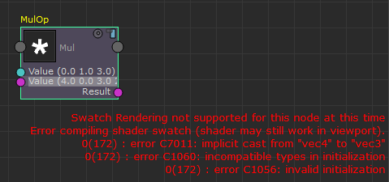

在 Stingray PBS 节点的 ShaderFX 编辑器中，如果执行非法运算（如将 float2 与 float3 相乘），则在单击“渲染样例”(Render Swatch)  图标时，将遇到错误“此时此节点不支持样例渲染”(Swatch Rendering not supported for this node at this time)。换句话说，您的样例未编译。
图标时，将遇到错误“此时此节点不支持样例渲染”(Swatch Rendering not supported for this node at this time)。换句话说，您的样例未编译。
选择“设置 > 显示样例编译错误”(Settings > Show Swatch Compile Errors)，然后单击“渲染样例”(Render Swatch)图标，并检查在 ShaderFX 编辑器窗口中显示的错误。
